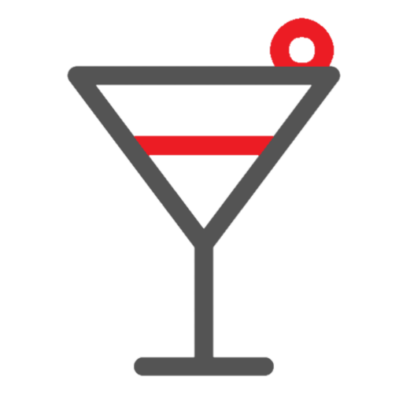

Коктейль
Рейтинг

Крепость
Простота
Коктейль
Рейтинг
Крепость
Простота
Добро пожаловать в TIPSY!
Мы дадим вам информацию о коктейлях и о том, как их сделать
Наслаждайтесь и получайте удовольствие!
_ingredients
_fixtures
_recipe
_category
_description

Шейкер(от английского слова shake - "трясти”) предназначен для смешивания разнородных по своей структуре ингредиентов, а также для охлаждения один или несколько компонентов напитка. На заметку: - не стоит увлекаться и слишком долго встряхивать шейкер - лед быстро расколется и превратится в воду, которая изменит вкус напитка в негативную сторону; - в шейкер нельзя наливать газированные напитки; - существуют определенные правила работы шейкером - чтобы максимально быстро и эффективно смешать компоненты, движение льда в шейкере должно быть по горизонтальной или вертикальной траектории. Классический, "Старомодный” или "Итальянский" шейкер состоит из трех частей: - стакана для смешивания; - стрейнера (фильтр); - крышки (колпачка). Для приготовления коктейля в Классическом шейкере необходимо: 1) Наполнить стакан для смешивания льдом на 1/3; 2) Добавить на лед необходимые ингредиенты; 3) Надеть на шейкер фильтр и колпачок; 4) Встряхнуть содержимое; 5) Процедить напиток в посуду подачи. Классический шейкер имеет одну неприятную особенность - иногда, после приготовления коктейля трудно открыть крышечку шейкера, а если после использования шейкера полениться и не сразу снять фильтр со стакана для смешивания - эти части надежно "прихватятся" и разъединить их будет крайне сложно. Дело в том, что под воздействием льда, металл быстро охлаждается и меняет свою форму. Чтобы избежать подобных проблем, необходимо предварительно охлаждать шейкер, наполняя стакан для смешивания льдом. Непосредственно перед приготовлением коктейля, лед нужно сменить или слить образовавшуюся воду. Кроме того, в предварительно охлажденном шейкере, лед тает намного медленнее, и вода не испортит вкус коктейля. После каждого использования без промедления снимите фильтр и вымойте все части шейкера. При хранении шейкера фильтр в стакан лучше положить перевернутым, а в него, соответственно положить перевернутый колпачок - таким образом шейкер не "задохнется" и проблем с "прихватившимися" частями не будет. Бостонский, "Американский" шейкер считается более современным и эффективным вариантом. Он состоит из двух стаканов для смешивания. Кроме того бостонский шейкер используют со стрейнером (ситечком) и барной ложкой. Как вариант шейкер может иметь два металлических стакана для смешивания или один стеклянный, а второй металлический. Для приготовления коктейля в "Бостонском” шейкере надо: 1) Наполнить оба стакана для смешивания льдом 2/3; 2) Помешать лед барной ложкой для охлаждения стаканов для смешивания; 3) Из стакана для смешивания, в который будут добавляться компоненты, вытряхнуть лед; 4) В стакан для смешивания влить необходимые компоненты; 5) С помощью стрейнера из второго стакана слить воду; 6) Перелить компоненты из первого стакана во второй, который наполнен льдом; 7) Вставить вертикально один стакан для смешивания в другой и легким ударом по верхнему стакану зафиксировать их; 8) Встряхнуть содержимое; 9) Открыть шейкер, нанеся легкий удар в место соединения стаканов; 10) С помощью стрейнера процедить напиток в посуду подачи. Процедуру можно и упростить (учитывая высокий темп работы бармена). Например, при охлаждении стаканов для смешивания не обязательно пользоваться барной ложкой, но, тем не менее, охлаждать надо обязательно, чтобы после смешивания можно было разъединить стаканы. Точно так же жидкость ото льда можно отделить и без стрейнера. Главное отличие и преимущество "Бостонского” шейкера от "Классического" - это качество конечного продукта. Во время приготовления в "Бостонском" шейкере появление воды в коктейле практически исключено, так как компоненты перед встряхиванием находятся в стакане для смешивания, в котором нет льда. В свою очередь, в «Старомодном» шейкере компоненты обычно наливают поверх льда, который моментально начинает таять.
Стакан для смешивания является также самостоятельным элементом барного инвентаря. Назначение этого стакана состоит в том, чтобы приготовить коктейль из компонентов, которые по своей структуре легко сочетаются друг с другом. В некоторых случаях стакан для смешивания используют, чтобы охладить напиток. Приготовление напитка в стакане для смешивания: 1) Наполнить стакан для смешивания льдом на 2/3; 2) C помощью барной ложки охладить стакан для смешивания; 3) С помощью стрейнера слить воду; 4) Налить в стакан для смешивания необходимые компоненты; 5) Смешать барной ложкой все компоненты; 6) Используя стрейнер, процедить напиток в посуду подачи. Производители барного инвентаря предлагают стаканы для смешивания, изготовленные из различных материалов и имеющие разный объем, начиная с 350 - 800 мл.
Стрейнер(барное ситечко) состоит из круглой пластины, выполненной из нержавеющей стали со спиралевидным краем и ручкой. Применяется для отделения напитков ото льда.
Барная ложка представляет собой ложку с длинной ручкой, имеющей на другом конце пестик для измельчения сахара, мяты и т.п. Некоторые барные ложки могут иметь на другом конце вилочку, которую можно использовать для удобства работы с лимоном, кусочками фруктов и другими украшениями или ингредиентами коктейлей. Барной ложкой пользуются для перемешивания ингредиентов в стакане. Она служит и как мерная ложка - 1 барная ложка вмещает 5 г или 5 мл жидкости. Выпуклую сторону барной ложки используют при приготовлении слоистых коктейлей. Ложки для абсента представляют собой резные, зачастую кружевные по краям, лопатки с отверстиями посередине для того, чтобы растворённый водой сахар свободно стекал в стакан с абсентом. Иногда встречаются варианты, которые вообще мало напоминают ложки. Кроме того в баре используется ложка для мороженого для приготовления десертов.
Джиггер(мерный стаканчик, мерник) представляет собой емкость стандартного объема, с помощью которой точно соблюдаются пропорции всех компонентов при приготовлении коктейлей. Объем классического мерного стаканчика в США равен полторы унции (40 мл), его делают из нержавеющей стали. Однако всем более привычен мерник для компонентов алкогольных коктейлей, который имеет два "хвоста" - емкости (конусы) стандартных объемов которые соединены друг с другом донышками. Объем одного из конусов как правило больше другого в два раза. Большой конус - это собственно джиггер, а маленький - пони. Джиггеры могут быть 20 мл на 40 мл, 25 мл на 50 мл или 30 мл на 60 мл. Эти меры чаще всего применяются в рецептах коктейлей. Для нас более привычным, а также, что не маловажно практичным будет джиггер 25 мл на 50 мл. Лучше предпочесть джиггер с толстым ободком на краешке - из такого удобнее наливать без прилипания спиртуоза к стенке. Обычно джиггеры используются на начальных стадиях обучения барменов, пока глазомер еще только развивается. Но есть и бармены с многолетним опытом работы, которые предпочитают джиггеры для приближения к высокому качеству приготовленных коктейлей. Также не редкость, когда хозяева того или иного места изначально дают указание использовать мерники, чтобы бармены не наливали больше или меньше. Унцовка- мерный стакан, объем которого указан в унциях (в России используется крайне редко). Мензурка- стеклянный конический стакан, с носиком и шкалой для точного измерения объема жидкости. Изготавливаются из химически стойкого лабораторного стекла. Не обладают термической устойчивостью. Выпускают мензурки на 50, 100, 250, 500 и 1000 мл. Не лишним будет напомнить, что для торговли можно использовать только стеклянные гостированные мензурки, причем с соответствующими документами.
Риммер- приспособление для быстрого нанесения декоративного сахарного или солевого ободка на кромку бокала. Декоратор или риммер изготавливается из пластика и представляет собой контейнер с несколькими отделениями. В одно насыпается соль, в другое - сахар, а в третье, с губкой, наливают сок лайма или лимона. Бармен окунает край бокала сначала в пропитку, а потом - в соль или в сахар - в зависимости от того, какой готовится напиток.
Декоратор для капучинопредставляет собой емкость для тертого шоколада, мускатного ореха, сахарной пудры и т.п. для украшения готового напитка. Может выполняться как в простой форме (как обычная емкость для специй), так и иметь несколько насадок для получения различных рисунков (например, в форме сердечка). Сифон для сливок (кремер) Сифон (кремер) для сливокиспользуется для быстрого приготовления взбитых сливок газом. Обратите внимание - кремер не дозирует определенную порцию сливок! К сифону для сливок необходимо приобретать дополнительные аксессуары: декоративные насадки, баллончики.
Если необходимо потолочь какой-то ингредиент, например, мяту, используется мадлер. Это приспособление производится как из дерева, так и в пластике и различается размерами и типом поверхности, перетирающей продукт (гладкая или ребристая).
В баре применяют два вида воронок - обычные для переливания напитков (например при снятии остатков) и специальные воронки для декантации. Последние выполняются как правило из нержавеющей стали имеют интересный дизайн.
Значительно ускоряет рабочий процесс специальная стойка для бутылок. Она может быть крутящейся или пристенной - кому как удобнее. На одной стойке можно разместить 4, 6 или 9 бутылок емкостью от 0,75 до 1 литра. Для того чтобы точно отмерить напитки, которые наливаются определенными порциями (ром, коньяк, виски, другие крепкие напитки), помимо привычных дозаторов применяют специальные дозаторы на струбцинах. Бутылка со вставленным дозатором особой конструкции закрепляется в них горлышком вниз, и одним нажатием дозатора в бокал наливается необходимая порция напитка (25 или 50 мл).
Самый популярный расходный материал в баре - гейзерына бутылки, позволяющие бармену разливать напитки тонкой и ровной струйкой. Модели, прежде всего, различаются шириной отверстия выхода жидкости: для более густых напитков оно должно быть шире. Обычно предпочитают средний вариант. Также необходимая модель гейзера подбирается в зависимости от ширины горлышка бутылки. Гейзеры производятся из металла или пластмассы. Варианты моделей - гейзер со стрейнером, с широким носиком, с узким носиком, с пробковой основой, с крышечкой.
Для снятия металлических крышек с бутылок используются специальные открывалки. Они могут выпускаться как в простом исполнении так и в стационарном для крепления на поверхности. По форме открывалки могут быть в виде рычажка или кольца. Можно встретить также и так называемые "автоматические" открывалки для бутылок. Чтобы открыть бутылку, нужно всего лишь надеть ей на горлышко эту открывалку и, не прилагая никаких усилий, легко нажать. Раз - и готово! Снятая пробка повиснет на встроенном внутри магните. Производители предлагают большой выбор штопоров- от небольших карманных штопоров с деревянной ручкой до солидных эргономичных моделей, состоящих из изогнутой для удобства ручки, спирали с тефлоновым покрытием и зазубренного лезвия из нержавеющей стали. Штопоры также как и бутылочные открывалки могут исполняться в стационарном настольном варианте. Профессиональный штопор на специальной подставке комплектуется обрезателем для фольги и сменным буром. Нарзанник(нож сомелье) - от простого штопора его отличает наличие ножа для обрезания фольги и опорное колено. Самый простой вариант - одноступенчатый нарзанник. Однако большинство барменов предпочитает двухколенный инструмент: бармен вкручивает штопор, закрывает и коленом слегка поджимает. Благодаря этому пробка выходит очень легко. В более дорогих моделях винт имеет тефлоновое покрытие. Кроме того, можно найти многофункциональный инструмент, например, с открывалкой для пива. Впрочем, последнюю можно также приобрести отдельно.
Из необходимых барных мелочей стоит упомянуть различные пробки. К примеру, в баре необходимо иметь вакуумные пробки для вин: помпа откачивает воздух из бутылки, что позволяет хранить открытое вино дольше без потери его качества. Самые "продвинутые" пробки имеют кодовый замок - удобно это или нет - решать Вам. Очень удобны пробки для вина со специальными пружинными рычагами и винтовые пробки. Пробка для шампанскогоимеет по бокам два рычажка, которые при опускании вниз защелкивают под ободком на горлышке бутылки (чтобы под воздействием газа пробка не вылетела).
Как правило, в баре имеется небольшой нож с ребристым лезвием и вилочкой на конце для нарезки фруктов и лимона, нож для цедры, а также маленький нож для срезания фольги с бутылок. Однако ассортимент ножей в баре может быть значительно шире, и в первую очередь за счет инструментов для фигурной нарезки.
Для некоторых коктейлей нужна ледяная крошка - лед-фраппе. Для ее приготовления можно воспользоваться ручным приспособлением для колки льда или специальной мельницей. Удобнее воспользоваться мельницей: бармен крутит ручку и лед измельчается в стружку. Корпус измельчителя производится из пластика или металла. Правда сами зубчики в большинстве моделей выполнены из пластика, что означает некоторый риск поломки при интенсивной эксплуатации. Именно поэтому следует быть особо внимательным при выборе оборудования и отдать предпочтение моделям, все детали которых выполнены из металла. Кстати, нужно иметь в виду, что такой аппарат измельчает лед в снегообразную кашицу, которая годится не для каждого коктейля. Очень удобны и необходимы в барменской работе и специальные ведра для льда, так называемые айс-бакеты, устроенные по принципу термоса. В этих металлических емкостях кубики льда прекрасно сохраняются в течение длительного времени. Необходимая вещь для бармена при работе со льдом - специальные совки. Они могут быть в пластиковом и металлическом исполнении. Каждый из их имеет свои преимущества и недостатки. Поликарбонатные совки легки, их рукоятка во время работы не остается относительно теплой, однако выбирая пластиковую модель стоит обратить внимание на качество материала - плохой пластик легко колется. Совки для льда из нержавейки прочны и гигиеничны, однако ручка их очень быстро замерзает - что не очень комфортно при работе, следует обратить внимание на модели с пластиковыми ручками.
В любом баре должны быть щипцы для сахара и льда. Щипцы-стрейнер предназначены для извлечения продуктов из жидкости (например фруктов из сиропа).
Механические прессы для цитрусовых могут исполняться в двух вариантах - со стаканом для готового сока и без. При покупке пресса обратите внимание на качество металла и исполнение - во время приготовления бармен прикладывает значительные усилия. Желательно, чтобы ручка пресса имела противоскользящее исполнение. Сквизеры, соковыжималки для лимона Механические соковыжималки для цитрусовых предствляют собой небольшие приспособления в виде емкости для готового сока и ребристой конической части с сеточкой. Сквизер- небольшой ручной пресс из нержавеющей стали (реже пластика) для получения сока из цитрусовых: на одну дольку или половинку. Лимон, лайм или апельсин кладут на выжимной корпус, придавливают рычагом и стакан наполняется соком. Емкости для сока, сиропов Для хранения заготовок, особенно - при организации больших вечеринок, удобно использовать емкости для сока и сиропов (джус-боксы). Это пластиковые контейнеры различных размеров. Они хранятся в холодильнике герметично закрытыми, однако при использовании основная крышка меняется на другую, с носиком, через который сок или иной жидкий ингредиент коктейля разливается по бокалам. Очень удобны и контейнеры для бармена, в которых можно хранить практически все продукты, необходимые для приготовления коктейлей: консервированные вишни и оливки, нарезанные лимоны, апельсины, лаймы. Прозрачные пластиковые крышки контейнеров предотвращают заветривание ингредиентов и дают возможность видеть что находится в контейнере. Для хранения и демонстрации пакетированного чая очень удобны деревянные боксы. Обратите внимание, что многие официальные дистрибьютеры крупных производителей чая предоставляют такие боксы бесплатно при условии торговли их продукцией. Органайзер бармена позволяет удобно разместить на барной стойке необходимый расходный материал - коктейльные трубочки, салфетки, а также самый необходимый инструмент вроде штопора и барного ножа.
Поддерживать барную стойку в чистоте помогут резиновые барные коврикии пластиковые сетки. Форма ковриков специально разработана для баров и ресторанов, они практически не занимают места на стойке и предотвращают скольжение предметов по ее поверхности. Шипы, покрывающие резиновый коврик, позволяют жидкости свободно стекать и испаряться. При использовании пластиковой сетки посуда также не скользит по поверхности стойки, не бьется и быстрее высыхает. Тонкие коврики и сетку можно использовать в качестве противоскользящего покрытия для подносов. Сетка удобна тем, что продается в рулонах и из нее можно вырезать коврики нужной формы и размеров. Барные подносы Для удобства подачи напитков будет нелишним приобрести пластиковые подносыс нескользящей прорезиненной поверхностью. Маленькие изящные подносы (например, из металла или керамики) используют для подачи чая, кофе и сигар, кроме того, их можно использовать для подачи счета гостю.